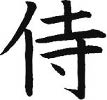

Japonya tarihi bölümünde bahsettiğim Heian dönemi esnasında soylu kesim zenginleşmeye ve kem gözler tarafından taciz edilmeye başlamış. O yıllarda özel güvenliği olan yüzme havuzlu siteler henüz kurulmadığından, insanlar silah kullanabilen, profesyonel korumalar arayışına girmiş. Zamanla soylu ailelerden bazıları iyice semirmiş ve korumaları da minik bir ordu boyutuna ulaşmış. Ardından olay büyümüş, derebeylikler kurulmuş, samuray adı verilen yeni bir savaşçı sınıf türemiş.
Sonrasında Kamakura dönemi, bitmeyen savaşlar dönemi derken samuraylar giderek önem kazanmış ve toplumda belli bir yer edinmişler. Yine de samuraylık Edo dönemine kadar yarı-amatör bir uğraşmış; barış zamanı tarlasında, bahçesinde çalışan samuraylar savaş çıkınca kılıçlarını kaptıkları gibi er meydanına akarlarmış.
Edo dönemiyle başlayan katı sosyal sınıflaşma ve askeri yönetim sonucu samuraylar kendilerine sağlam bir yer edinmişler. Çiftçilerin, tüccarların, zanaatkârların üstünde, toplumun en saygın kesimi olarak yer alan samuraylar artık bağ bahçeyle uğraşmaz olmuş. Kılıç taşıma yetkisi sadece samuraylara tanınmış ve samuraylar acımasız, kan dökücü, vurucu, kırıcı imajlarıyla askeri lojmanlara yerleşmişler.
İşin komik tarafı, bu sosyal statüyü edindikten sonra samuraylara pek iş düşmemiş ve nispeten barışçı, istikrarlı Edo döneminde hepsi masabaşı birer görev kapmışlar. Böylece ortalığı karıştırmaları, isyanlar, kelle istemeler önlenmiş. O yıllarda Osmanlı Japonya’ya teknik bir ekip gönderip samuraylık sistemini inceleseymiş diyorum. Savaş olmayan dönemlerde shogun bu haşin kitleyi uyuşturmayı iyi başarmış. Ama aynı yıllarda bizim yeniçeriler canları sıkıldıkça sarayı basıp sadrazam boğazlıyorlarmış. Osmanlılar nerede yanlış yapmış, niye ayarı tutturamamış bilmiyorum, ama keşke açıp da Japonlara bir sorsalarmış...
Bir yönüyle samuraylık bizdeki yeniçerilerden ziyade Avrupa’nın şövalyelerine daha çok benziyor. Aralarındaki hiyerarşi, bürokratik yapıları, askerlik ve savaş tekniği kadar güzel sanatlara, felsefeye yakınlıkları da samurayları toplumun saygın bir sınıfı haline getiriyor. Samuray sadece “savaşçı sınıf” değil, “soylu savaşçı sınıf” anlamına geliyor. Aslında samuray kelimesinin kökü “hizmet eden” anlamını taşıyor. Yani samuray bir anlamda “lorduna hizmetle görevli kişi” anlamında. Japon kültüründeki “hizmet” anlayışı samuraylarda da kendisini gösteriyor. Sonuçta samurayların hepsi bir daimyoya bağlı, yani kafalarına göre kılıç kuşanıp at koşturamıyorlar.
Ama şövalyelik ile farkları da burada: Kendi şirketini kurup bağımsız çalışan şövalyeler parasını bastıran soylunun hizmetinde çalışabiliyorlardı. Böyle şövalyelere “freelance”, yani “özgür mızrak” deniyordu ki bu kavram başına buyruk profesyoneller için batıda halen kullanılır. Japonya’da ise başsız kalmış samuraylara ronin deniyor, ama roninlik ne yazık ki pek hoş bir sosyal statü değil.
Samuraylığın en temel ilkelerinden birisi sadakat. Haliyle, bir daimyonun elinden toprağı ve yetkileri alınırsa veya savaş kaybederse, samurayları da onunla beraber kaybediyor. Bu durumda samuraylığın kutsal kitabı bushidoya göre, onlardan beklenen, seppuku (harakiri) yaparak sahneden çekilmek. Ama tabii ki bu kutsal intihar metodu farz değil.
Bu yüzden bir şekilde liderini kaybeden samuray, ronin olarak ortalıkta sürünmeye başlıyor. Kılıç kuşanma yetkisini kaybetmiyor, ama emrinde savaşabileceği bir kumandanı olmadığı için kılıcıyla sadece karpuz kesebiliyor. Maaşı da kesildiğinden, hayatını kazanmak için ek iş arıyor ve elinden hangi zanaat geliyorsa çalışmaya başlıyor.
Edo döneminde topraklar daimyolar arasında paylaştırılırken ve yönetim yeniden yapılandırılırken epey bir samuray boşa çıkıyor ve piyasadaki ronin miktarı artıyor. Bu durum bakufunun hoşuna gitmiyor; ne de olsa eli kılıç tutan, savaşçı ve işsiz güçsüz önemli bir tabaka oluşuyor. Bakufu, roninlerin yaşayacağı belirli bölgeler saptıyor, samuraylık statülerini korumalarına izin veriyor, istedikleri işlerde çalışmalarına göz yumuyor ve şehrin “eğlence” mekânlarında gönüllerince vakit geçirmelerine karışmıyor. Böylece, roninlerin fazla maraza çıkarmadan yaşayıp gitmeleri sağlanıyor.
Ronin statüsü küçük düşürücü, utanılacak bir durum olsa da roninler toplumsal hayatta sevimli bir imaj oluşturmayı başarıyorlar. Üst sınıfa terfi etmiş, soylu, burnundan kıl aldırmaz samuraylara karşı, aynı derecede cesur ve savaşçı, ama bir o kadar da delikanlı, mahallenin sevimli kabadayısı rolüne bürünüyorlar ve kimseye bağlı olmamalarından dolayı da keyiflerince yaşıyorlar.
Delikanlı roninlerin en fiyakalı hikâyesi de “47 Ronin” efsanesi. Her Japon vatandaşının ezbere bildiği, tüm erkek Japon çocukların sokaklarda tahta kılıçlarla canlandırdığı bu efsane, delikanlılığın kitabının yeniden yazılması olarak yorumlanıyor. Birçok kabuki ve bunraku oyunu ile filme konu olmuş bu hikâyede şeref, sadakat, fedakârlık zirveye vuruyor.
Efendim, 1700’lerin başında genç ve sevilen bir daimyo olan Asano, Edo sarayı içinde bir diğer daimyo (Kira) ile kavga eder. Kira, denyo bir daimyodur ve Asano’ya gıcık atıp durmaktadır. Asano da hançerini çeker, hacamat etmek üzere Kira’ya doğru uçar, ancak Kira saldırıdan bir iki ufak sıyrıkla kurtulur. Ama, saray içinde her ne olursa olsun kılıç kalkan olayına girmek yasaktır ve Asano’dan hemen seppuku yapması istenir.
Asano, başı dik bir şekilde bağırsaklarını deşer. Aynı zamanda bütün toprakları, mal varlığı, ünvanları da elinden alınır. Asano’ya bağlı 47 samuray da ronin pozisyonuna düşer. Kira önceleri Asano’nun samuraylarından tırsar, çünkü Asano sevilen bir karakterdir. Ancak, en kıdemlileri Oishi’nin liderliğinde 47 samuray kendilerini yemeye, içmeye, eğlenceye, kumara vermişlerdir.
Aslında bütün bu olan bitenler bir kumpastır ve 47 ronin bir intikam yemini etmiştir. Her biri halkın arasına karışır, sefahata dalar ve bir süre sonra Tokyo’da “rezil rüsva herifler” olarak nam yaparlar. Oishi kendini rolüne öyle kaptırmıştır ki karısı bile onu terkeder ve bunu duyan Kira iyice rahatlar. Olayın üstünden yaklaşık iki yıl geçip olay neredeyse unutulduktan sonra, 47 ronin gizlice toplanır bir gece. Üzerinde aylarca düşünülmüş bir planla Kira’nın şatosuna saldırılır, epey bir adamı doğranır ve sonunda Kira yakalanarak kafası kesilir.
Saldırı Edo’da hemen duyulur. 47 ronin, Kira’nın kafasını ellerine alarak Asano’nun mezarının olduğu tapınağa doğru yürüyüşe geçer. Yolda halk tarafından tezahüratlarla desteklenen roninler tapınağa varıp Kira’nın kellesini patronlarına armağan ederler. Cezaları kesinlikle ölümdür; ancak adi suçlular gibi idam mı edileceklerdir, yoksa samuraylara yaraşır onurlu bir seppukuya layık mı görüleceklerdir?
Shogun olayların tarihçesini, iki yıllık sadakat ve fedakârlık hikâyesini duyduktan sonra 47 roninin samuray mertebesinde seppuku yapmasına karar verir. 47 kafadar hep birlikte gönül rahatlığı ile karınlarını deşer ve sadakatlerinin gereğini yerine getirmenin huzuruyla terk-i diyar eyler. Mezarları ziyaretçi akınına uğrar.
Bu hikâye ile ilgili ilginç bir detay okumuştum: Oishi rol kestiği günlerde bir gece sızmış bir şekilde sokağın ortasında yatarken adamın birisi gelip kafasını tekmelemiş, üstüne tükürmüş vesaire. Oishi vaziyeti çaktırmamak için ses etmemiş. Adam daha sonra tekmelediği şahsın Oishi olduğunu öğrenince mezarına gitmiş, ağlamış, özür dilemiş ve kılıcını çıkarıp oracıkta harakiri yapmış! Yani bu millet her an harakiri yapmaya hazır; yeter ki ufak bir bahane bulun!
Samuraylık, Konfüçyüsçülük ve Zen Budizminden oldukça etkilenen bir etik sistem üzerine kurulu. Bushido adı verilen bu sistem bir anlamda samuraylığın raconu. Bushido, “savaşçının yolu” anlamına geliyor ve genel kabul görmüş bir kurallar/ilkeler bütünü ile samuraylığın sınırlarını çiziyor, yani delikanlılığın kitabını yazıyor.
Bushido birtakım yüksek değerlerin ön plana çıkarılması, tanımlanması ve samuray sınıfının hayatına nasıl adapte edilmesi gerektiğini belirliyor. Bu değerler şu şekilde sıralanabilir:
• Dürüstlük ve adalet
• Sadakat ve görev bilinci
• Cesaret ve özkontrol
• İyilikseverlik ve cömertlik
• Kibarlık ve asalet
• Açıksözlülük ve samimiyet
• Onur (estağfurullah)
• Tabii ki silah kullanımında üstün meziyetler
Bushido ayrıca samurayların eğitimi, giyim kuşamları, seppuku seremonileri, evlilikleri, kadının yeri gibi konulara da el atıyor. Yazılı olmayan bir değerler bütünü olarak yüzyıllar boyunca nesilden nesile aktarılan bushido, 19. yüzyılda Inazo Nitobe tarafından kitaplaştırılıyor ve bir Japon düşünce sistemi olarak literatürde yerini alıyor.
Nitobe’nin bushidoyu kitaplaştırma sürecinin başlangıcı ilginç. Vaftiz edilmiş bir Hıristiyan (daha doğrusu o dönemde Japonya’da çok etkili olan Quaker tarikatı üyesi) olan Nitobe, diplomatik bir görevle Avrupa’da bulunduğu sırada Belçikalı bir meslektaşı ile derin muhabbetlere dalar. Meslektaşı, Nitobe’ye Japon okullarında dini eğitim verilip verilmediğini sorar. Japonya’da zaten pek de eğitimi verilecek bir din olmadığından, Nitobe olumsuz cevap verir. Bunun üzerine Belçikalı, “Olamaz! Din eğitimi vermeden ahlaki değerleri nasıl çocuklarınıza aşılıyorsunuz” gibi bağnaz bir yorumda bulunur. Yani, “din olmadan ahlak olur mu” geyiği bu sohbette de hortlar. Babası da bir samuray olan Nitobe, uzun uzun kendi ahlak anlayışının nasıl evrildiğini düşünür ve etik değerlerinin bushido tarafından şekillendirildiğini fark eder. Japon feodal sistemi içinde gelişen bushidoyu anlamadan Japon ahlak ve düşünce yapısını çözmenin mümkün olmayacağına inanır ve yüzyılların birikimini İngilizce bir kitapta derler! Kitap Japoncaya daha sonra çevrilir.
Samuraylar kendi dönemlerindeki diğer ülkelerin savaşçı sınıfları arasında büyük ihtimalle en eğitimli ve güzel sanatlara en meraklı olanlarıydı. Avrupalı meslektaşları olan şövalyeler de üstün ahlaki değerleri ile bilinse ve “şövalye ruhu” halen olumlu anlamlar taşısa da samurayların daha incelikli ve entelektüel olduğu söylenebilir.
Ama bu özellikleri kılıçlarının saldığı korkuyu azaltmaz. 14. yüzyılda bir dökümcü ustasının geliştirdiği teknikle yapılan ve katana adı verilen kılıçların vahşeti dünya çapında ün kazanmış, fazla cesametli olmasalar da son derece keskin ve etkili olan bu kılıçlar öldürücülükte liste başına yerleşmiştir.
National Geographic kanalında “öldürücü silahlar” konulu uzun bir belgesel seyretmiştim. Bu belgeselde ateşli olmayan yakın dövüş silahlarının “öldürme güçleri” hakkında bilimsel bir araştırma yapılıyordu. Kılıç, mızrak, gürz, muşta, balta, kama ve bilumum hırdavatın öldürme gücü birçok değişik ölçüt ile sınanıyor, grafikler çiziliyor, simülasyonlar yapılıyor ve notlar veriliyordu. Yarışmanın sonunda, samuray katanası en ölümcül silah olarak ilan edilmişti.
Samuraylar, kılıçlarının keskinliğini ara sıra halk üzerinde deneyebiliyorlardı. Toplumun sınıflara ayrılmış olması ve samurayların da en üst sınıfta yer almasından dolayı, kendilerine yamuk yapan köylü, çiftçi, tüccar, esnaf ve benzerlerini sorgusuz sualsiz kesip biçme hakları vardı. Sokakta yürürken gözüne kestirdiği bir garibanın -yan baktı, düz baktı veya hiç bakmadı gibi bir bahaneyle- kellesini uçurabilirdi.
Samurayların ilginç bir özelliği daha vardı: Sadece kendi topraklarında ve birbirleri ile didişip durdular ve başka ülke orduları ile karşı karşıya gelmediler. Bu yüzden, yerel ligde gösterdikleri başarıları şampiyonlar liginde de gösterip gösteremeyeceklerini hiçbir zaman bilemeyeceğiz (16. yüzyılda Kore yarımadasında birkaç özel karşılaşma yapmış olsalar da fazla bir fikir edinilememiş).
Samuray denince, bir yanlış anlamayı önlemek için ninja konusuna da değinmek lazım. Bizim genelde vurdulu kırdılı Asya filmlerinde gördüğümüz, kapkara giyinmiş, yüzü maskeli, kelebek gibi uçup arı gibi sokan, etrafı dumana bulayıp ortadan kaybolan, düz duvara tırmanıp rakibine yıldız şeklinde bıçaklar atan şerefsizler nincadır; onları samuraylar ile karıştırmamak gerekir.
Samuraylar ne kadar onurlu, gururlu, ahlaklı savaşçılarsa, bu nincalar da o denli güvenilmez, alçak, şerefsiz kaypaklardır. Arkanızdan konuşurlar, dedikodunuzu yaparlar, çamur atarlar, borç alırlarsa geri vermezler, bir de sinsice arkadan yaklaşıp sizi öldürüverirler. İmaj yapmak için çoğunlukla siyah giyinirler, sadakat falan hak getiredir, parayı bastıran için adam boğazlarlar.
İlginçtir ki bushido gibi bir ahlaki değerler sistemine rağmen, Japon tarihi boyunca ihanetler, başkaldırılar, suikastler, sabotajlar hiç eksik olmamıştır. Hatta kimi tarihçilere göre bushido hiçbir zaman egemen bir etik sistem haline gelememiştir; Japonlar, eksikliğini hissettikleri, özlem duydukları erdemleri bushido altında derlemiştir. Sonuçta, kitabın başında belirtildiği gibi, Japonya tam bir tezatlar diyarıdır. Samuray ile anti-samuray (ninja) aynı anda var olmuştur.
Ninca, özel bir savaş eğitimi almış gerilladır diyebiliriz. Bushido, samuraylara belaltı vurmayı yasakladığından, kirli işlerini hallettirmek için kullandıkları maşalardır nincalar. Bir ninca için en olmazsa olmaz özellik görünmeden hareket etmektir. Bu yüzden, ninjutsu (fark edilmeden ilerleyebilmek) denilen bir savaş sanatında ustalaşırlar. Görünmemek ve tanınmamak için filmlerde abartılan teknikleri geliştirmişlerdir; yoğun duman çıkaran bir tür bomba kullanarak ortadan kaybolmak veya rakibinin suratına bambudan mamul bir kum/metal tozu karışımı patlayıcı fırlatmak nincanın klasik numaralarındandır.
Verilen görevin gizliliği esastır; bu yüzden yakalanmaları durumuna karşı intihar etmek için kullanabilecekleri tertibat mutlaka hazırdır: harakiri için kama, kendi boğazını kırabilecek artistik bir hareket, üstünde taşıdığı bir zehir ve benzeri... Sürekli siyah giyinmeleri kabuki oyunlarından kalma bir kalıptır. Aslolan kamuflaj olduğu için duruma uygun herhangi bir kıyafet ninca kıyafeti olarak kullanılabilir. Ninca silahlarının çeşitliliği konusunda ise, Uzakdoğu filmlerindeki Cüneyt Arkınvari fantastik sahneler çoğunuzun gözünde canlanır sanırım.
Filmlerdeki birçok “efsane”nin aslında gerçeklik payı vardır. Üstüne inen kılıcı eliyle tutabilen ninca, aslında avucuna bir metal pençe takar. Bu pençe, düz duvara tırmanmasında faydalı olduğu gibi kılıç saldırılarını da savuşturur. Dengelerini sağlayabilmek için ayaklarının çeşitli noktalarına ağırlık bağlarlar. Yanlarında suyun altında gizlenebilmek için bir şnorkel, yaralandıkları durumlar için merhem, ot vesaire taşırlar. Bir bakıma, James Bond filmlerindeki Q’nun hazırladığı abidik gubidik icatların gerçekte var olanlarıdır ninca edevatları; nincaların, James Bond gibi, göreve çıkarken yanlarında duruma uygun bir alet çantaları olur.
Nincalar hayatta kalmak için beş duyularının insanüstü işlemesi, hatta altıncı hislerinin de gelişmesi gerektiğine inanır ve bu yolda kendilerini eğitirler. Örneğin bir ninca koku alma duyusunu geliştirmek için haftalarca kendini eğitir; öyle ki, karşılaştığı bir yabancının kokusundan bile memleketini, sosyal statüsünü falan tahmin edebilsin. Aynı şekilde kokuları kendilerini ele vermesin diye sık sık yıkanmak ve doğal kokularının tanınmasını engelleyecek aromaterapik uygulamalar yapmak da nincalığın raconları arasındadır.
Nincalar yanlarında duruma özel yiyecek de taşırlarmış. Uzun süre kıpırdamadan saklanmaları gerekiyorsa veya kısa sürede çok enerji harcayacaklarsa, duruma uyan yiyecekler yanlarında bulunurmuş. Soğuk havada uzun sürebilecek pusular için çok uzun süre yanabilen ve vücutlarını sıcak tutan bakırdan bir kömür kabı taşırlarmış (ilk termofor!). Yine özel işlemden geçirilmiş bir kumaşı gerekirse bandaj olarak, gerekirse de suyu süzerek içilebilir hale getirmek için kullanırlarmış. Bitki ve baharatlardan kendilerine özgü ilaçlar geliştirmişler.
Yanlarında taşıdıkları üçgen kesitli özel iğneleri hem dikiş için hem ince bir boruyla rakibin gözüne atmak için hem de gerektiğinde akupunktur benzeri tedaviler için kullanırlarmış. Giysilerinde kullanılan özel bir kumaş boyası da zehirli yılan ve böcükleri uzak tutarmış. Çocukluğumuzun yüce mucit-kahramanı McGyver’ın bile nincalardan çok şey öğrendiği rivayet edilir.
Nincalar bu özellikleri sayesinde samuraylardan çok daha cazip ve popüler ikonlar olmuşlar. Gerek Uzakdoğu gerekse de Hollywood sinemasında sıkı roller kapmışlar, sonunda Amerikalılar nincaların pizzasever tosbağa modellerini de üretmişler.
Sonuçta, Meiji dönemiyle beraber ortada ne samuray kaldı ne de ninca... Birçok Japon için bushido ve samuray ruhu halen en yüce ahlaki değerlerdi, ama artık devir “modern ninca” devriydi. Siyah ninca kıyafetlerinin yerini takım elbise, ninjutsunun yerini de finansal piyasalar aldı.
İkinci Dünya Savaşının ardından samuray ruhunun yüceltilerek devam etmesi gerektiğine can-ı gönülden inanan tek kişi kalmıştı: modern Japon edebiyatının en önde gelen isimlerinden Yukio Mishima. Mishima, soylu bir ailenin hisli bir evladıydı. Çocukluğundan itibaren edebiyata büyük ilgi duyuyordu; ama babası bu merakı biraz efemine bulduğundan edebiyatla gizli gizli ilgileniyordu.
Parlak bir gençti, iyi okullarda okudu, iyi bir işe de girdi, ancak içindeki edebiyat ateşi sönmedi. Hâlâ babasından tırsan Mishima, gizli gizli hikâyeler, tiyatro oyunları yazmaya devam ediyordu; sonunda babasını da ikna ederek işinden ayrıldı, kendini yazmaya, çizmeye verdi. Babasının ona yakıştırdığı “efemine” sıfatını doğrulayacak mekânlarda takılıyor olsa da evlendi, çocukları oldu.
Mishima zamanla üstadı Kawabata ile birlikte Japonya’nın en tanınmış yazarı oldu. Özellikle batıda çok sevildi, romanları değişik dillere çevrildi ve ne derece “Japon” yazdıysa, o derece “batılı” hayran kazandı. Üç kez Nobel’e aday gösterildi, ancak ödül “kıdem”den dolayı Kawabata’ya verildi (Biraz Yaşar Kemal-Orhan Pamuk vakasını andırsa da tam tersi şekilde sonuçlanmış) ve Mishima ödül alamayacağına kanaat getirdi.
O sıralarda Mishima’nın politik görüşleri de ilginç bir mecrada gelişti. Mishima İkinci Dünya Savaşının ardından tanrısal kimliğini reddeden imparatorun yeniden güçlendirilerek gerçek anlamda iktidara getirilmesini savunuyordu. Çağdaş ve yurtsever bir milliyetçilik anlayışı vardı; bu yüzden ne sol görüşe ne de klasik milliyetçilere yaranamıyordu. Tek düşündüğü, imparatorun ve samuray ruhunun yeniden egemen olmasıydı.
Mishima daha sonra orduya (yani resmi adıyla öz savunma kuvvetlerine) katıldı, kılıç ve dövüş teknikleri konusunda çalışmaya ve eğitim vermeye başladı. Başında bulunduğu tatenokai isimli özel bir yakın koruma grubu vardı. Bu arada ölüm ve intihar kavramlarına duyduğu ilgi ve hayranlık had safhaya ulaşmış, arkadaşlarına sürekli olarak ölmenin güzelliği ve erdemlerinden bahseder olmuştu.
İmparatorun sembolik bir kavrama indirgenmesi ve samurayların sadece sinema dünyasına hapsolması iyice sinirini bozdu. Bir gün dört elemanı ile birlikte komutanının odasına girdi, adamcağızı sandalyeye bağladı ve balkona çıkıp ahaliye hitaben ateşli bir konuşma yaptı. Halkı, imparatoru yeniden iktidara taşımak ve bushidoyu canlandırmak için bir ayaklanmaya davet etti.
Ama köprülerin altından çok sular geçmişti. Konuşması havada kaldı, dinleyenlerin tepkisi “Deli midir nedir, yazık çocuğa, güzel de yazardı” dan öteye gitmedi. Zaten ölmek için bir bahane arıyordu, böylece bulmuş oldu. Tekrar komutanının odasına girdi, kılıcını aldı, bağdaş kurdu, duraksamadan karnını yararak Japon tarihinin en son seppukusunu 1970 yılında gerçekleştirdi.